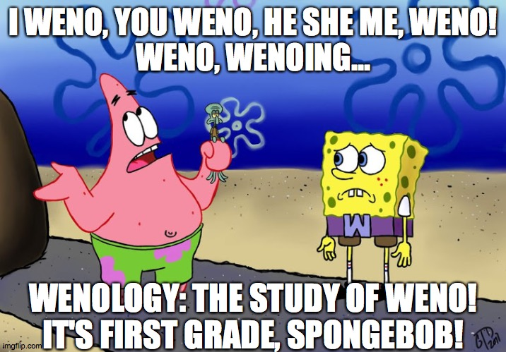

Research
My general research area is algorithm development for numerically solving partial differential equations, in particular, hyperbolic equations and kinetic models. Recently, my interests are focused on developing high-order, structure-preserving low-rank methods for solving time-dependent problems. I have also started looking into the data science applications of low-rank tensor decompositions. My previous project involved developing a Eulerian-Lagrangian finite volume method for solving convection-diffusion equations. Other specific areas of interest include: WENO methods, Eulerian-Lagrangian/semi-Lagrangian methods, numerical tensors, and the Fokker-Planck operator. Lecture notes and slides on these topics will be posted under the "Notes and Resources" page as I create them.
I have also written articles on promoting diversity in the LGBTQ+ mathematics community.

Research Publications and Pre-prints
J. Nakao, W. Taitano, and J.-M. Qiu, "A structure preserving, conservative, low-rank tensor decomposition algorithm for the 1D2V Vlasov-Fokker-Planck equation." In preparation.
J. Chen, J. Nakao, J.-M. Qiu, and Y. Yang, "A new forward Eulerian-Lagrangian finite volume method for nonlinear hyperbolic problems." In preparation.
J. Nakao, "Speeding up high-order algorithms in computational fluid and kinetic dynamics: based on characteristics tracing and low-rank structures." University of Delaware, (2023). (link here).
J. Nakao, J. Chen, and J.-M. Qiu, "An Eulerian-Lagrangian Runge-Kutta finite volume (EL-RK-FV) method for solving convection and convection-diffusion equations." Journal of Computational Physics, 470 (2022), pp. 111589. (link here).
J. Nakao and Y.L. Han, "Preliminary simulated results modeling a dynamic heating cancer ablation probe." Proceedings of the ASME 2018 IMECE, Pittsburgh, PA, 2018.
Diversity Articles
R. Buckmire, A. Folsom, C. Goff, A. Hoover, J. Nakao, and K.A. Sather-Wagstaff, "On best practices for the recruitment, retention, and flourishing of LGBTQ+ mathematicians." Notices of the American Mathematical Society, 70:6 (2023), pp. 979-985.
J. Nakao, "The pot of gold at the end of the rainbow -- how mathematics departments can increase LGBTQ+ inclusivity." Mathematical Association of America Math Values Blog, (2021). (link here).
Research Presentations
- A Brief Introduction to Low-Rank Tensor Decompositions (slides) Download here
- A structure-preserving, conservative, low-rank tensor decomposition algorithm for the 1D2V Vlasov-Fokker-Planck equation (slides) Download here